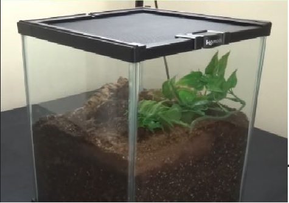
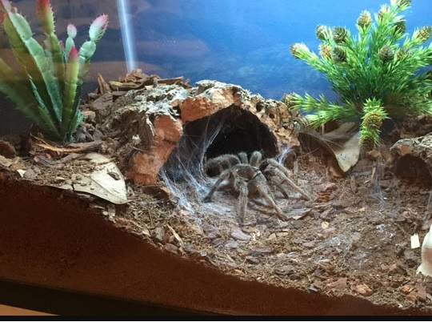
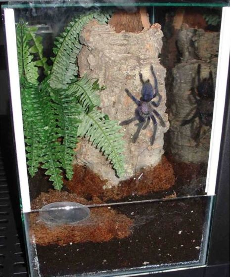

Quick reference guide for Tarantulas
What type of Tarantula do you have?
- Very deep substrate
- Provide initial burrow buy digging out a hole. Tarantula will do the rest once it settles in the burrow
- Provide leaf litter, moss, other foliage for building a nest
- Tend to be "pet holes" that you rarely see especially as slings
- Tend to forage at night when it's dark and quiet

- Still a good amount of substrate as they still burrow and use substrate for building
- More width than height in enclosure
- Generally at least 3x leg span width to walk around
- Lots of anchor points to web up including branches and foliage
- A burrow to retreat/hide in
- Important not to have more than a few inches from top to substrate as tarantulas are prone to fatal falls

- Vertical enclosure with few inches of substrate at the bottom
- Cork bark or other objects to climb and web up
- Some sort of vertical hide
- Enclosure that can open from the front is best as to not disturb webbing up top
- Water dish elevated off ground as they rarely spend time near the floor

What part of the world is it from?
New World
- Most species will kick urticating hairs as a defense
- Generally more docile and less defensive
- Most species have non medically significant venom
- Seen as more beginner friendly
- Some species are seen as a stepping stone to old world as they have more potent venom ex: P. Crambdigei
Old World
- Seen as the more advance species to keep
- Medically significant venom
- Extremeley fast and generally more defensive
- A lot of beautiful species not normally seen
General knowledge for all species
- Do not keep a sponge in the water dish. It serves no purpose as the tarantula can not draw water from it.
- Spot clean at most but generally you do not need to ever completely clean out an enclosure
- Do not repeatedly disturb the tarantula. Long lengths of time with out seeing the Tarantula are normal
- Any food not eaten should be removed after a day
- Tarantulas lay on their back during molt and molts last hours
- Keep water available through a water dish or misting their web
- Slings will generally burrow regardless of type
- Substrate should never be swampy
- Some species are known to go months to a year with out eating
- If the tarantula has access to water and it's abdomen isn't shrivelled it is generally doing fine
- Tarantulas don't eat for days to weeks after molting. The older they are the longer before their fangs harden after a molt